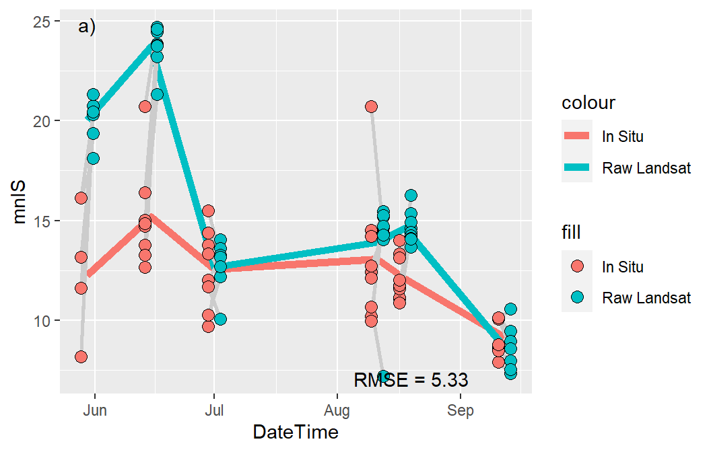

library(tidyverse) # for dplyr, ggplot2 packages
library(patchwork) # for placing multiple plots
library(mgcv) # for GAMM analysesIntroduction
Murphy et al. (2021) examined the ability to use Landsat thermal imagery and a variety of possible environmental data to predict water temperatures in small streams in Alaska. Their Figure 3 is a fairly complex graphic that shows hows Landsat observations and predictions from a variety of generalized additive mixed models (GAMMs) compared to in situ water temperature measurements. Here I use ggplot2 to try to recreate their figure.
The following packages are loaded for use below. A few functions from each of FSA, gtext, and scales are used with :: such that the entire packages are not attached here.
Some of the results below include randomization. To promote reproducibility, the random seed is set here.
set.seed(7834344)Finally, to help keep the ggplot2 code near the end simpler, the following custom theme was created. Its components will be described further below.
theme_murphy <- function() {
theme_bw() +
theme(panel.grid=element_blank(),
legend.position=c(1,1),legend.justification=c(1.1,1.1),
legend.title=element_blank(),
legend.text=element_text(size=10))
}
Data Wrangling I
Murphy et al. (2021) provided the raw data to produce Figure 3 in their Data S1 supplemental material, which I loaded below. DateTime was converted to a proper date variable, SiteCode was converted to a factor,1 only the variables needed for this post were retained, and only observations where both an in situ temperature reading and a Landsat prediction were made.
1 Which is required by gam() further below.
dat <- read.csv("JFWM-20-048.S1.csv") |>
mutate(DateTime=as.Date(DateTime,format="%m/%d/%Y"),
SiteCode=factor(SiteCode)) |>
select(SiteCode,DateTime,In.Situ,Landsat,AirDaily,GageDaily,GageDiff) |>
filter(!is.na(In.Situ),!is.na(Landsat))
FSA::headtail(dat)#R| SiteCode DateTime In.Situ Landsat AirDaily GageDaily GageDiff
#R| 1 CR-1 2015-05-30 11.625 20.74 14.441667 1.0161458 -0.090178571
#R| 2 CR-1 2015-06-15 14.721 24.46 18.437500 0.9594792 -0.193854167
#R| 3 CR-1 2015-07-01 9.682 14.03 8.554167 0.7387500 -0.006904762
#R| 45 SF-3 2015-08-11 12.727 14.26 10.429167 0.6050000 0.005699405
#R| 46 SF-3 2015-08-18 12.001 14.06 11.433333 0.9793750 0.322574405
#R| 47 SF-3 2015-09-12 8.792 7.52 7.354167 0.9212500 -0.010520833
GAMMs
Murphy et al. (2021) reported results from the fitting of four GAMMs in panels B-E in their Figure 3. Each model consisted of some combination of Landsat predictions (Landsat) and three environmental variables (AirDaily, GageDaily, and GageDiff) as smoothed fixed effects. Each model also included the specific locations (siteCode) as a smoothed random effect. The four models shown in Figure 3 were the “top models” from many other models considered in the paper.
Fitting Models
Warning
My goal here is not to fully demonstrate how to fit GAMMs in R, rather I want to show how Figure 3 was constructed. I am not an expert with GAMMs and am, in fact, still learning how to properly use and interpret them. Thus, be cautious and wary about following my work here.
Inputs or results for each of the four GAMMs will be appended with the corresponding panel letter. For example, objects that end with a “B” will be related to the GAMM used in panel B.
Four objects are created below that define the GAMM “formula.” In these formulae, s() is the smoother function provided by mgcv and k=5 is the “modest maximum basis size” and bs="cr" is the cubic spline smoother used in Murphy et al. (2021). The bs="re" used for SiteCode causes it to be treated as a “random effect” as in Murphy et al. (2021). This code does not yet perform any analyses, it just creates a “formula” to be used next (and later).
formB <- In.Situ~s(AirDaily,k=5,bs="cr")+
s(GageDaily,k=5,bs="cr")+
s(GageDiff,k=5,bs="cr")+
s(SiteCode,bs="re")
formC <- In.Situ~s(AirDaily,k=5,bs="cr")+
s(GageDaily,k=5,bs="cr")+
s(GageDiff,k=5,bs="cr")+
s(Landsat,k=5,bs="cr")+
s(SiteCode,bs="re")
formD <- In.Situ~s(AirDaily,k=5,bs="cr")+
s(SiteCode,bs="re")
formE <- In.Situ~s(Landsat,k=5,bs="cr")+
s(SiteCode,bs="re")The actual GAMMs are fit with gam() from mgcv, taking a formula for the model as the first argument and the corresponding data frame in data=. The four lines below fit the four GAMMS of panels B-E using the formula objects created above.
mdlB <- gam(formB,data=dat)
mdlC <- gam(formC,data=dat)
mdlD <- gam(formD,data=dat)
mdlE <- gam(formE,data=dat)For example, a summary() of the model for panel B shows the same r2 and smooth term p-values as described in the results of Murphy et al. (2021).
summary(mdlB)#R|
#R| Family: gaussian
#R| Link function: identity
#R|
#R| Formula:
#R| In.Situ ~ s(AirDaily, k = 5, bs = "cr") + s(GageDaily, k = 5,
#R| bs = "cr") + s(GageDiff, k = 5, bs = "cr") + s(SiteCode,
#R| bs = "re")
#R|
#R| Parametric coefficients:
#R| Estimate Std. Error t value Pr(>|t|)
#R| (Intercept) 12.5004 0.8018 15.59 <2e-16 ***
#R| ---
#R| Signif. codes: 0 '***' 0.001 '**' 0.01 '*' 0.05 '.' 0.1 ' ' 1
#R|
#R| Approximate significance of smooth terms:
#R| edf Ref.df F p-value
#R| s(AirDaily) 1.000 1 46.477 < 2e-16 ***
#R| s(GageDaily) 1.000 1 18.995 0.00011 ***
#R| s(GageDiff) 1.000 1 5.128 0.02984 *
#R| s(SiteCode) 8.257 9 7.384 2.66e-06 ***
#R| ---
#R| Signif. codes: 0 '***' 0.001 '**' 0.01 '*' 0.05 '.' 0.1 ' ' 1
#R|
#R| R-sq.(adj) = 0.716 Deviance explained = 78.6%
#R| GCV = 3.1696 Scale est. = 2.343 n = 47Leave-One-Out Predictions and MSE
Acknowledgment
The code in this section would not have been possible without help from the lead author of Murphy et al. (2021). I ultimately modified their code, but the general idea is still theirs. Of course, errors in the code presented here are my responsibility. I thank the authors for providing this code to me.
Murphy et al. (2021) used a leave-one-out cross-validation (LOOCV) procedure to generate the root mean square error (MSE) as well as “LOOCV” predictions for each model. The general idea here is to fit the GAMM with the first observation removed (i.e., “left out”), predict the in situ temperature for the first observation from this model, compute the residual between the observed in situ and predicted in situ temperature for this point, repeat this a number of times,2 compute mean squared residual, and save the mean squared residuals and mean predicted in situ temperatures. Repeat this process for each of the other observations.3 Then compute and return the square root of the mean of the mean squared residuals (this is the LOOCV MSE) and the vector of mean predicted in situ temperatures related to each observation (i.e., for each DateTime and SiteCode combination).
This process is coded into the loocv.re() function shown in the folded code below.4
4 I modified this function from what the authors provided me by including comments, changing some intermediate variable names, removing some inner loops to speed things up, and returning the results in a different way.
Code
loocv.re <- function(form,dat,n.iters=100){
n <- nrow(dat)
## prepare matrix to received LOOCV prediction values (rows are for ith point
## left-out, columns are for random iterations)
predsRE <- matrix(NA,nrow=n,ncol=n.iters)
## perform LOOCV loop
for(i in 1:n) {
## fit GAMM with ith row removed
mod <- gam(form,data=dat[-i,])
## get random effects SE
sitelevs <- paste0("s(SiteCode).",1:length(levels(dat[,"SiteCode"])))
re.se <- sd(coef(mod)[sitelevs])
## get individual SD
resid.se <- sigma(mod)
## predict In.Situ for ith left-out point, excluding SiteCode from GAMM fit
p <- predict(mod,newdata=dat[i,],type="terms",exclude="s(SiteCode)")
## get fixed effects portion of prediction
predsFE <- sum(p) + attr(p,"constant")
## add on random random effects portions
predsRE[i,] <- rep(predsFE,n.iters) +
rnorm(n.iters,mean=0,sd=re.se) +
rnorm(n.iters,mean=0,sd=resid.se)
}
## Compute mean of predicted values for each observation using FE+RE
mean.predsRE <- rowMeans(predsRE)
## Find all residuals from predicted values using FE+RE
residsRE <- matrix(NA,nrow=n,ncol=n.iters)
for(i in 1:n) residsRE[i,] <- dat[i,"In.Situ"] - predsRE[i,]
## Find MSE from residuals from using predictions from FE+RE
MSERE <- sqrt(mean(rowMeans(residsRE)^2))
## Return all results
list(mean.predsRE=mean.predsRE,MSERE=MSERE,
resids=residsRE,formula=form)
}The process laid out above is applied to the model in panel B below.
looB <- loocv.re(formB,dat=dat)From this result, the MSE can be extracted.5
5 This MSE may not exactly match that in the published Figure 3 because of the randomization used in making the model predictions. Also 100 iterations is on the low side, such that this value may vary somewhat from run to run (see “Further Thoughts” section.
looB$MSERE#R| [1] 2.455614The mean LOOCV predicted in situ temperatures for each observation (i.e., location-date combination) may also be examined.
looB$mean.predsRE#R| [1] 12.851791 14.149310 11.636388 14.001670 12.315976 12.552054 14.406877
#R| [8] 12.111865 14.576413 11.324704 13.884762 13.122397 9.594543 14.072126
#R| [15] 11.477815 13.830428 12.831921 9.334164 12.429613 14.532410 12.209832
#R| [22] 12.424465 14.553735 11.631457 13.734138 12.551352 9.853848 12.629046
#R| [29] 11.580924 14.031804 12.249635 9.467855 15.333607 11.544352 12.818436
#R| [36] 12.603421 9.896241 14.343051 13.954222 12.598558 9.358737 12.140968
#R| [43] 14.786858 11.550166 13.681013 12.143915 9.626715The LOOCV process was repeated for the other three models below.
Code
looC <- loocv.re(formC,dat=dat)
looD <- loocv.re(formD,dat=dat)
looE <- loocv.re(formE,dat=dat)The resultant MSE values were stored into a named vector for later use.
MSE <- c("B"=looB$MSERE,"C"=looC$MSERE,"D"=looD$MSERE,"E"=looE$MSERE)
MSE#R| B C D E
#R| 2.455614 2.478938 2.499286 2.545127And the resultant mean LOOCV predicted in situ temperatures were stored into a data frame, along with the corresponding SiteCode and DateTime information for later use.
mean.predsRE <- data.frame(SiteCode=dat$SiteCode,
DateTime=dat$DateTime,
predB=looB$mean.predsRE,
predC=looC$mean.predsRE,
predD=looD$mean.predsRE,
predE=looE$mean.predsRE)
FSA::headtail(mean.predsRE)#R| SiteCode DateTime predB predC predD predE
#R| 1 CR-1 2015-05-30 12.851791 11.210556 12.144141 12.568541
#R| 2 CR-1 2015-06-15 14.149310 14.470042 14.437798 14.684522
#R| 3 CR-1 2015-07-01 11.636388 12.541739 11.940564 12.973309
#R| 45 SF-3 2015-08-11 13.681013 13.712191 13.659172 12.561452
#R| 46 SF-3 2015-08-18 12.143915 12.791890 13.015895 12.910432
#R| 47 SF-3 2015-09-12 9.626715 9.353639 9.350488 9.646322
Data Wrangling II
A new data frame is created below to facilitate efficiently reproducing Figure 3. This data frame will contain SiteCode, DateTime, InSitu, and Landsat from the original dat, but will also have the mean LOOCV predictions for each model joined from mean.predsRE.6
6 All variables from dat could have been included but they are not needed to produce Figure 3, so they were removed to decrease clutter when examining the data frame.
dat2 <- dat |>
select(-(AirDaily:GageDiff)) |>
left_join(mean.predsRE,by=c("SiteCode","DateTime"))
FSA::headtail(dat2)#R| SiteCode DateTime In.Situ Landsat predB predC predD predE
#R| 1 CR-1 2015-05-30 11.625 20.74 12.851791 11.210556 12.144141 12.568541
#R| 2 CR-1 2015-06-15 14.721 24.46 14.149310 14.470042 14.437798 14.684522
#R| 3 CR-1 2015-07-01 9.682 14.03 11.636388 12.541739 11.940564 12.973309
#R| 45 SF-3 2015-08-11 12.727 14.26 13.681013 13.712191 13.659172 12.561452
#R| 46 SF-3 2015-08-18 12.001 14.06 12.143915 12.791890 13.015895 12.910432
#R| 47 SF-3 2015-09-12 8.792 7.52 9.626715 9.353639 9.350488 9.646322Each panel in Figure 3 shows the mean in situ temperature for each date as well as either the mean temperature predicted from Landsat imagery or one of the four models. These means are computed below.
sum2 <- dat2 |>
group_by(DateTime) |>
summarize(n=n(),
mnIS=mean(In.Situ),
mnRL=mean(Landsat),
mnB=mean(predB),
mnC=mean(predC),
mnD=mean(predD),
mnE=mean(predE))
sum2#R| # A tibble: 6 × 8
#R| DateTime n mnIS mnRL mnB mnC mnD mnE
#R| <date> <int> <dbl> <dbl> <dbl> <dbl> <dbl> <dbl>
#R| 1 2015-05-30 6 12.2 20.0 12.5 12.3 12.7 12.7
#R| 2 2015-06-15 8 15.2 23.7 14.5 14.6 14.5 14.4
#R| 3 2015-07-01 8 12.6 12.6 11.6 12.0 12.0 11.6
#R| 4 2015-08-11 9 13.1 13.9 13.8 13.7 13.2 12.5
#R| 5 2015-08-18 9 12.1 14.6 12.5 12.4 12.9 13.1
#R| 6 2015-09-12 7 9.15 8.63 9.59 9.43 9.26 9.83Each panel also shows the MSE between the in situ temperatures and the temperatures predicted from Landsat or one of the four GAMMs. The MSEs from the GAMMs were stored above. Below, the MSE from the Landsat predictions is calculated and prepended to the MSE vector created above.
MSE_A <- sqrt(sum((dat2$In.Situ-dat2$Landsat)^2)/nrow(dat2))
MSE <- c("A"=MSE_A,MSE)
MSE#R| A B C D E
#R| 5.330851 2.455614 2.478938 2.499286 2.545127Those values are then turned into a vector of labels for the plots below. Note that formatC() is used here rather than round() as it will force the full number of digits to be shown (e.g., “2.50” rather than “2.5”). I also chose two decimals rather than the one used in Murphy et al. (2021) to better illustrate the differences (though minor) among the models.
MSE_lbls <- paste("RMSE =",formatC(MSE,format="f",digits=2))
names(MSE_lbls) <- names(MSE)
MSE_lbls#R| A B C D E
#R| "RMSE = 5.33" "RMSE = 2.46" "RMSE = 2.48" "RMSE = 2.50" "RMSE = 2.55"Make Figure 3
Panel A
Panels A-E have the same basic structure of layering together several geoms with both raw and summarized data. I demonstrate this layering for Panel A and, then, in the next section show how this is modified to produce Panel B.
Panel A shows in situ temperature observations and predictions from landsat images for six dates with multiple locations at each date. In situ observations and landsat predictions paired by location are connected within each date. To do this, Murphy et al. (2021) “jittered” the in situ and landsat results slightly at each date. Jittering usually means adding a random amount to each point, which is not what was done in Figure 3. Rather, the groups were “dodged” left for the in situ observations and right for the landsat predictions. This will be accomplished here by subtracting and adding a small amount to the date (i.e., x-axis) for in situ and landsat results, respectively. Below, I set that amount in an object called ddg so that it can be held constant for multiple geoms in each panel and also across panels.7
7 Choosing this value is largely a matter of trial-and-error until you find the look you like.
ddg <- 1.5I began panel A by plotting lines at the means for both the in situ and landsat results. The color= is set to a constant string in each geom_line() because the in situ and landsat results are in separate columns in sum2 rather than stacked with a second variable describing the source of the value. As seen below, these strings are shown in the legend.
ggplot() +
geom_line(data=sum2,mapping=aes(x=DateTime,y=mnIS,color="In Situ"),
linewidth=2) +
geom_line(data=sum2,mapping=aes(x=DateTime,y=mnRL,color="Raw Landsat"),
linewidth=2)Points that demonstrate the observed in situ temperatures and the landsat predicted temperatures are added with geom_point(). ddg is used here to “dodge” the two sets of points. shape=21 is an open circle outlined in color= but filled with fill=. Again, because of the arrangement of the data in separate columns, fill= is set to a constant string that matches that used for the geom_line()s.
ggplot() +
geom_line(data=sum2,mapping=aes(x=DateTime,y=mnIS,color="In Situ"),
linewidth=2) +
geom_line(data=sum2,mapping=aes(x=DateTime,y=mnRL,color="Raw Landsat"),
linewidth=2) +
geom_point(data=dat2,mapping=aes(x=DateTime-ddg,y=In.Situ,fill="In Situ"),
shape=21,size=3,color="black") +
geom_point(data=dat2,mapping=aes(x=DateTime+ddg,y=Landsat,fill="Raw Landsat"),
shape=21,size=3,color="black")Murphy et al. (2021) connected in situ and landsat temperatures paired by location within each date with light gray lines. This is accopmlished with geom_segment() below. geom_segment() was placed before the geom_point()s so that the gray segments would appear behind the points. It is worth noting here that adding these segments is the reason why the data were not stacked and the in situ and landsat results were kept in separate columns.
ggplot() +
geom_line(data=sum2,mapping=aes(x=DateTime,y=mnIS,color="In Situ"),
linewidth=2) +
geom_line(data=sum2,mapping=aes(x=DateTime,y=mnRL,color="Raw Landsat"),
linewidth=2) +
geom_segment(data=dat2,mapping=aes(x=DateTime-ddg,xend=DateTime+ddg,
y=In.Situ,yend=Landsat),
color="gray80",linewidth=1) +
geom_point(data=dat2,mapping=aes(x=DateTime-ddg,y=In.Situ,fill="In Situ"),
shape=21,size=3,color="black") +
geom_point(data=dat2,mapping=aes(x=DateTime+ddg,y=Landsat,fill="Raw Landsat"),
shape=21,size=3,color="black")
The MSE and panel labels are added below with annotate() using geom="text" as demonstrated in previous posts. Note here that Inf or -Inf cannot be used for the x-axis values because they are dates. Thus, the x-axis position must be chosen by choosing a date and making sure that it is treated as a date with as.Date().
ggplot() +
geom_line(data=sum2,mapping=aes(x=DateTime,y=mnIS,color="In Situ"),
linewidth=2) +
geom_line(data=sum2,mapping=aes(x=DateTime,y=mnRL,color="Raw Landsat"),
linewidth=2) +
geom_segment(data=dat2,mapping=aes(x=DateTime-ddg,xend=DateTime+ddg,
y=In.Situ,yend=Landsat),
color="gray80",linewidth=1) +
geom_point(data=dat2,mapping=aes(x=DateTime-ddg,y=In.Situ,fill="In Situ"),
shape=21,size=3,color="black") +
geom_point(data=dat2,mapping=aes(x=DateTime+ddg,y=Landsat,fill="Raw Landsat"),
shape=21,size=3,color="black") +
annotate(geom="text",x=as.Date("2015-08-05",format="%Y-%m-%d"),y=-Inf,
label=MSE_lbls[["A"]],hjust=0,vjust=-0.5,size=11/.pt) +
annotate(geom="text",x=as.Date("2015-05-30",format="%Y-%m-%d"),y=Inf,
label="a)",vjust=1.5,size=11/.pt)
The x-and y-axes were modified as described in previous posts. Note, however, the use of markdown code in the y-axis title, which will require the use of element_markdown() from ggtext later when a theme is applied.
ggplot() +
geom_line(data=sum2,mapping=aes(x=DateTime,y=mnIS,color="In Situ"),
linewidth=2) +
geom_line(data=sum2,mapping=aes(x=DateTime,y=mnRL,color="Raw Landsat"),
linewidth=2) +
geom_segment(data=dat2,mapping=aes(x=DateTime-ddg,xend=DateTime+ddg,
y=In.Situ,yend=Landsat),
color="gray80",linewidth=1) +
geom_point(data=dat2,mapping=aes(x=DateTime-ddg,y=In.Situ,fill="In Situ"),
shape=21,size=3,color="black") +
geom_point(data=dat2,mapping=aes(x=DateTime+ddg,y=Landsat,fill="Raw Landsat"),
shape=21,size=3,color="black") +
annotate(geom="text",x=as.Date("2015-08-05",format="%Y-%m-%d"),y=-Inf,
label=MSE_lbls[["A"]],hjust=0,vjust=-0.5,size=11/.pt) +
annotate(geom="text",x=as.Date("2015-05-30",format="%Y-%m-%d"),y=Inf,
label="a)",vjust=1.5,size=11/.pt) +
scale_y_continuous(name="Temperature (^o^C)",
limits=c(0,30),breaks=scales::breaks_width(10)) +
scale_x_date(name="Date")The colors of the points and lines need to be changed to match those in Murphy et al. (2021) and the issue of multiple legends also needs to be addressed. The colors of the lines are set with scale_color_manual() below and the fills of the points are set with scale_fill_manual() as shown in other posts. Note that values= is set to a named list where the names are the constant text values used in color= for geom_line() and fill= for geom_point() above. The use of name= here must be the same in both scale_fill_manual() and scale_color_manual() so that the two legends above will be merged into a common legend with this name as its title.
ggplot() +
geom_line(data=sum2,mapping=aes(x=DateTime,y=mnIS,color="In Situ"),
linewidth=2) +
geom_line(data=sum2,mapping=aes(x=DateTime,y=mnRL,color="Raw Landsat"),
linewidth=2) +
geom_segment(data=dat2,mapping=aes(x=DateTime-ddg,xend=DateTime+ddg,
y=In.Situ,yend=Landsat),
color="gray80",linewidth=1) +
geom_point(data=dat2,mapping=aes(x=DateTime-ddg,y=In.Situ,fill="In Situ"),
shape=21,size=3,color="black") +
geom_point(data=dat2,mapping=aes(x=DateTime+ddg,y=Landsat,fill="Raw Landsat"),
shape=21,size=3,color="black") +
annotate(geom="text",x=as.Date("2015-08-05",format="%Y-%m-%d"),y=-Inf,
label=MSE_lbls[["A"]],hjust=0,vjust=-0.5,size=11/.pt) +
annotate(geom="text",x=as.Date("2015-05-30",format="%Y-%m-%d"),y=Inf,
label="a)",vjust=1.5,size=11/.pt) +
scale_y_continuous(name="Temperature (^o^C)",
limits=c(0,30),breaks=scales::breaks_width(10)) +
scale_x_date(name="Date") +
scale_fill_manual(name="legend",
values=c("In Situ"="gray70","Raw Landsat"="steelblue1")) +
scale_color_manual(name="legend",
values=c("In Situ"="black","Raw Landsat"="blue4"))Finally, theme_murphy() create above was applied. This theme applies the built-in theme_bw(), removes all grid lines, moves the legend into the upper-right corner of the plot layer, removes the legend title, and makes the legend text slightly larger than the default. After this the y-axis title will use element_markdown() so that the markdown code will be rendered and the x-axis title is removed. Finally, this entire plot is saved into the pA object so that it can ultimately be stitched together with the other panels to form Figure 3.
pA <- ggplot() +
geom_line(data=sum2,mapping=aes(x=DateTime,y=mnIS,color="In Situ"),
linewidth=2) +
geom_line(data=sum2,mapping=aes(x=DateTime,y=mnRL,color="Raw Landsat"),
linewidth=2) +
geom_segment(data=dat2,mapping=aes(x=DateTime-ddg,xend=DateTime+ddg,
y=In.Situ,yend=Landsat),
color="gray80",linewidth=1) +
geom_point(data=dat2,mapping=aes(x=DateTime-ddg,y=In.Situ,fill="In Situ"),
shape=21,size=3,color="black") +
geom_point(data=dat2,mapping=aes(x=DateTime+ddg,y=Landsat,fill="Raw Landsat"),
shape=21,size=3,color="black") +
annotate(geom="text",x=as.Date("2015-08-05",format="%Y-%m-%d"),y=-Inf,
label=MSE_lbls[["A"]],hjust=0,vjust=-0.5,size=11/.pt) +
annotate(geom="text",x=as.Date("2015-05-30",format="%Y-%m-%d"),y=Inf,
label="a)",vjust=1.5,size=11/.pt) +
scale_y_continuous(name="Temperature (^o^C)",
limits=c(0,30),breaks=scales::breaks_width(10)) +
scale_x_date(name="Date") +
scale_fill_manual(name="legend",
values=c("In Situ"="gray70","Raw Landsat"="steelblue1")) +
scale_color_manual(name="legend",
values=c("In Situ"="black","Raw Landsat"="blue4")) +
theme_murphy() +
theme(axis.title.y=ggtext::element_markdown(),
axis.title.x=element_blank())
pAPanels B-E
Panel B is constructed very similarly to Panel A. The most important difference is that all references to results related to Landsat must be changed to results related to model B. Of course, the object name and colors for the model were also changed. Finally, this panel did not have titles for either axis.
pB <- ggplot() +
geom_line(data=sum2,mapping=aes(x=DateTime,y=mnIS,color="In Situ"),
linewidth=2) +
geom_line(data=sum2,
mapping=aes(x=DateTime,y=mnB,
color="Model = AirDaily + GageDaily + GageDiff"),
linewidth=2) +
geom_segment(data=dat2,mapping=aes(x=DateTime-ddg,xend=DateTime+ddg,
y=In.Situ,yend=predB),
color="gray80",linewidth=1) +
geom_point(data=dat2,mapping=aes(x=DateTime-ddg,y=In.Situ,fill="In Situ"),
shape=21,size=3,color="black") +
geom_point(data=dat2,
mapping=aes(x=DateTime+ddg,y=predB,
fill="Model = AirDaily + GageDaily + GageDiff"),
shape=21,size=3,color="black") +
annotate(geom="text",x=as.Date("2015-08-05",format="%Y-%m-%d"),y=-Inf,
label=MSE_lbls[["B"]],hjust=0,vjust=-0.5,size=11/.pt) +
annotate(geom="text",x=as.Date("2015-05-30",format="%Y-%m-%d"),y=Inf,
label="b)",vjust=1.5,size=11/.pt) +
scale_y_continuous(name="Temperature (^o^C)",
limits=c(0,30),breaks=scales::breaks_width(10)) +
scale_x_date(name="Date") +
scale_fill_manual(name="legend",
values=c("In Situ"="gray70",
"Model = AirDaily + GageDaily + GageDiff"="indianred3")) +
scale_color_manual(name="legend",
values=c("In Situ"="black",
"Model = AirDaily + GageDaily + GageDiff"="red4")) +
theme_murphy() +
theme(axis.title=element_blank())
pBSimilar changes were made to produce objects for Panels C-E.
Code
pC <- ggplot() +
geom_line(data=sum2,mapping=aes(x=DateTime,y=mnIS,color="In Situ"),
linewidth=2) +
geom_line(data=sum2,
mapping=aes(x=DateTime,y=mnC,
color="Model = AirDaily + GageDaily + GageDiff + Landsat"),
linewidth=2) +
geom_segment(data=dat2,mapping=aes(x=DateTime-ddg,xend=DateTime+ddg,
y=In.Situ,yend=predC),
color="gray80",linewidth=1) +
geom_point(data=dat2,mapping=aes(x=DateTime-ddg,y=In.Situ,fill="In Situ"),
shape=21,size=3,color="black") +
geom_point(data=dat2,
mapping=aes(x=DateTime+ddg,y=predC,
fill="Model = AirDaily + GageDaily + GageDiff + Landsat"),
shape=21,size=3,color="black") +
annotate(geom="text",x=as.Date("2015-08-05",format="%Y-%m-%d"),y=-Inf,
label=MSE_lbls[["C"]],hjust=0,vjust=-0.5,size=11/.pt) +
annotate(geom="text",x=as.Date("2015-05-30",format="%Y-%m-%d"),y=Inf,
label="c)",vjust=1.5,size=11/.pt) +
scale_y_continuous(name="Temperature (^o^C)",
limits=c(0,30),breaks=scales::breaks_width(10)) +
scale_x_date(name="Date") +
scale_fill_manual(name="legend",
values=c("In Situ"="gray70",
"Model = AirDaily + GageDaily + GageDiff + Landsat"="indianred3")) +
scale_color_manual(name="legend",
values=c("In Situ"="black",
"Model = AirDaily + GageDaily + GageDiff + Landsat"="red4")) +
theme_murphy() +
theme(axis.title.y=ggtext::element_markdown(),
axis.title.x=element_blank())
pD <- ggplot() +
geom_line(data=sum2,mapping=aes(x=DateTime,y=mnIS,color="In Situ"),
linewidth=2) +
geom_line(data=sum2,
mapping=aes(x=DateTime,y=mnD,
color="Model = AirDaily"),
linewidth=2) +
geom_segment(data=dat2,mapping=aes(x=DateTime-ddg,xend=DateTime+ddg,
y=In.Situ,yend=predD),
color="gray80",linewidth=1) +
geom_point(data=dat2,mapping=aes(x=DateTime-ddg,y=In.Situ,fill="In Situ"),
shape=21,size=3,color="black") +
geom_point(data=dat2,
mapping=aes(x=DateTime+ddg,y=predD,
fill="Model = AirDaily"),
shape=21,size=3,color="black") +
annotate(geom="text",x=as.Date("2015-08-05",format="%Y-%m-%d"),y=-Inf,
label=MSE_lbls[["D"]],hjust=0,vjust=-0.5,size=11/.pt) +
annotate(geom="text",x=as.Date("2015-05-30",format="%Y-%m-%d"),y=Inf,
label="d)",vjust=1.5,size=11/.pt) +
scale_y_continuous(name="Temperature (^o^C)",
limits=c(0,30),breaks=scales::breaks_width(10)) +
scale_x_date(name="Date") +
scale_fill_manual(name="legend",
values=c("In Situ"="gray70",
"Model = AirDaily"="indianred3")) +
scale_color_manual(name="legend",
values=c("In Situ"="black",
"Model = AirDaily"="red4")) +
theme_murphy() +
theme(axis.title.y=element_blank())
pE <- ggplot() +
geom_line(data=sum2,mapping=aes(x=DateTime,y=mnIS,color="In Situ"),
linewidth=2) +
geom_line(data=sum2,
mapping=aes(x=DateTime,y=mnE,
color="Model = Landsat"),
linewidth=2) +
geom_segment(data=dat2,mapping=aes(x=DateTime-ddg,xend=DateTime+ddg,
y=In.Situ,yend=predE),
color="gray80",linewidth=1) +
geom_point(data=dat2,mapping=aes(x=DateTime-ddg,y=In.Situ,fill="In Situ"),
shape=21,size=3,color="black") +
geom_point(data=dat2,
mapping=aes(x=DateTime+ddg,y=predE,
fill="Model = Landsat"),
shape=21,size=3,color="black") +
annotate(geom="text",x=as.Date("2015-08-05",format="%Y-%m-%d"),y=-Inf,
label=MSE_lbls[["E"]],hjust=0,vjust=-0.5,size=11/.pt) +
annotate(geom="text",x=as.Date("2015-05-30",format="%Y-%m-%d"),y=Inf,
label="e)",vjust=1.5,size=11/.pt) +
scale_y_continuous(name="Temperature (^o^C)",
limits=c(0,30),breaks=scales::breaks_width(10)) +
scale_x_date(name="Date") +
scale_fill_manual(name="legend",
values=c("In Situ"="gray70",
"Model = Landsat"="indianred3")) +
scale_color_manual(name="legend",
values=c("In Situ"="black",
"Model = Landsat"="red4")) +
theme_murphy()Putting Panels Together
All five panels were then placed together using patchwork() to produce the final Figure 3.
pA + pB + pC + pD + pE +
plot_layout(ncol=2)
Further Thoughts
As I noted above, I am no expert on GAMs or GAMMs. Here, though, I demonstrate a couple questions I had from this analysis. This is not intended as a critique of the authors or their paper, I assume that they knew what they were doing and that these questions come from my current lack of understanding about GAMMs.
Question 1
I don’t understand the point of adding random error in the authors’ LOOCV algorithm when they then average across the iterations. In other words, it seems to me that if you add random error with a mean of 0 to “something” for many iterations and then average across those iterations that you are very likely going to get the original “something.”
To examine this, I modified the authors LOOCV routine to also keep track of the “fixed effects” portion of the predictions (i.e., the “something” prior to adding the random errors).
Code
loocv.fere <- function(form,dat,n.iters=100){
n <- nrow(dat)
## prepare matrix to received LOOCV prediction values (rows are for ith point
## left-out, columns are for random iterations)
predsRE <- matrix(NA,nrow=n,ncol=n.iters)
predsFE <- numeric(n)
## perform LOOCV loop
for(i in 1:n) {
## fit GAMM with ith row removed
mod <- gam(form,data=dat[-i,])
## get random effects SE
sitelevs <- paste0("s(SiteCode).",1:length(levels(dat[,"SiteCode"])))
re.se <- sd(coef(mod)[sitelevs])
## get individual SD
resid.se <- sigma(mod)
## predict In.Situ for ith left-out point, excluding SiteCode from GAMM fit
p <- predict(mod,newdata=dat[i,],type="terms",exclude="s(SiteCode)")
## get fixed effects portion of prediction
predsFE[i] <- sum(p) + attr(p,"constant")
## add on random random effects portions
predsRE[i,] <- rep(predsFE[i],n.iters) +
rnorm(n.iters,mean=0,sd=re.se) +
rnorm(n.iters,mean=0,sd=resid.se)
}
## Compute MSE just from the predicted mean FE portion
MSEFE <- sqrt(mean((dat[,"In.Situ"]-predsFE)^2))
## Compute mean of predicted values for each observation using FE+RE
mean.predsRE <- rowMeans(predsRE)
## Find all residuals from predicted values using FE+RE
residsRE <- matrix(NA,nrow=n,ncol=n.iters)
for(i in 1:n) residsRE[i,] <- dat[i,"In.Situ"] - predsRE[i,]
## Find MSE from residuals from using predictions from FE+RE
MSERE <- sqrt(mean(rowMeans(residsRE)^2))
## Return all results
list(mean.predsFE=predsFE,MSEFE=MSEFE,
mean.predsRE=mean.predsRE,MSERE=MSERE,
resids=residsRE,formula=form)
}I then performed the LOOCV analysis with this modified function using 10, 100 (as was done in the paper), 10000, and 1000000 iterations. For each set of iterations I compute the mean difference between mean predictions with and without adding the randomization and showed the MSE for predictions with and without adding the randomization, as well as the difference between the two. The results are shown in the table below.
Code
looB.100 <- loocv.fere(formB,dat=dat)
tmp.100 <- data.frame(mpFE=looB.100$mean.predsFE,
mpRE=looB.100$mean.predsRE) |>
mutate(mpDIFF=mpFE-mpRE)
MSE.100 <- c("MSE_FE"=looB.100$MSEFE,"MSE_RE"=looB.100$MSERE,
"MSE_FE-MSE_RE"=looB.100$MSEFE-looB.100$MSERE)
looB.10 <- loocv.fere(formB,dat=dat,n.iters=10)
tmp.10 <- data.frame(mpFE=looB.10$mean.predsFE,
mpRE=looB.10$mean.predsRE) |>
mutate(mpDIFF=mpFE-mpRE)
MSE.10 <- c("MSE_FE"=looB.10$MSEFE,"MSE_RE"=looB.10$MSERE,
"MSE_FE-MSE_RE"=looB.10$MSEFE-looB.10$MSERE)
looB.10000 <- loocv.fere(formB,dat=dat,n.iters=10000)
tmp.10000 <- data.frame(mpFE=looB.10000$mean.predsFE,
mpRE=looB.10000$mean.predsRE) |>
mutate(mpDIFF=mpFE-mpRE)
MSE.10000 <- c("MSE_FE"=looB.10000$MSEFE,"MSE_RE"=looB.10000$MSERE,
"MSE_FE-MSE_RE"=looB.10000$MSEFE-looB.10000$MSERE)
looB.1000000 <- loocv.fere(formB,dat=dat,n.iters=1000000)
tmp.1000000 <- data.frame(mpFE=looB.1000000$mean.predsFE,
mpRE=looB.1000000$mean.predsRE) |>
mutate(mpDIFF=mpFE-mpRE)
MSE.1000000 <- c("MSE_FE"=looB.1000000$MSEFE,"MSE_RE"=looB.1000000$MSERE,
"MSE_FE-MSE_RE"=looB.1000000$MSEFE-looB.1000000$MSERE)
comp <- data.frame(n.iters=c("10","100","10,000","1,000,000"),
mndiff=c(mean(tmp.10$mpDIFF),mean(tmp.100$mpDIFF),
mean(tmp.10000$mpDIFF),mean(tmp.1000000$mpDIFF))) |>
bind_cols(bind_rows(MSE.10,MSE.100,MSE.10000,MSE.1000000))| n.iters | mndiff | MSE_FE | MSE_RE | MSE_FE-MSE_RE |
|---|---|---|---|---|
| 10 | 0.0055 | 2.4572 | 2.8127 | -0.3555 |
| 100 | -0.0156 | 2.4572 | 2.4998 | -0.0426 |
| 10,000 | 0.0001 | 2.4572 | 2.4577 | -0.0005 |
| 1,000,000 | 0.0002 | 2.4572 | 2.4577 | -0.0005 |
From these results it appears that there is no practical difference between the mean LOOCV predictions based on just the fixed-effects portion or the mean after adding randomization. However, it does appear that there is a difference in the MSE calculations between the two methods, but that those differences are dependent on the number of iterations used. Thus, it appears that part of the MSE value is based on an algorithmic choice rather than characteristics of the data.
Question 2
I don’t understand the point of having the red points on panels B-E and why they are connected with a gray line. It seems to me that the gray lines are connecting observations (gray points) to a mean (the red points), which is essentially a model residual. Furthermore, this seems further complicated given that the mean predictions (red points) depend on the chosen number of iterations (analysis above). To further illustrate this second point I recreated panel B from Figure 3 using the different numbers of iterations.8
8 Note that I “zoomed” the y-axis in a little bit to reduce white space to better see variation.
Code
dat3 <- dat |>
select(-(AirDaily:GageDiff)) |>
bind_cols(predB.10=looB.10$mean.predsRE,
predB.100=looB.100$mean.predsRE,
predB.10000=looB.10000$mean.predsRE,
predB.1000000=looB.1000000$mean.predsRE)
sum3 <- dat3 |>
group_by(DateTime) |>
summarize(n=n(),
mnIS=mean(In.Situ),
mnB.10=mean(predB.10),
mnB.100=mean(predB.100),
mnB.10000=mean(predB.10000),
mnB.1000000=mean(predB.1000000))
pB.10 <- ggplot() +
geom_line(data=sum3,mapping=aes(x=DateTime,y=mnIS,color="In Situ"),
linewidth=2) +
geom_line(data=sum3,mapping=aes(x=DateTime,y=mnB.10,color="Model"),
linewidth=2) +
geom_segment(data=dat3,mapping=aes(x=DateTime-ddg,xend=DateTime+ddg,
y=In.Situ,yend=predB.10),
color="gray80",linewidth=1) +
geom_point(data=dat3,mapping=aes(x=DateTime-ddg,y=In.Situ,fill="In Situ"),
shape=21,size=3,color="black") +
geom_point(data=dat3,mapping=aes(x=DateTime+ddg,y=predB.10,fill="Model"),
shape=21,size=3,color="black") +
annotate(geom="text",x=as.Date("09/15/2015",format="%m/%d/%Y"),y=Inf,
label="10 iterations",vjust=1.5,hjust=1.1,size=11/.pt) +
scale_y_continuous(name="Temperature (^o^C)",
limits=c(7,23),breaks=scales::breaks_width(5)) +
scale_x_date(name="Date") +
scale_fill_manual(values=c("In Situ"="gray70","Model"="indianred3")) +
scale_color_manual(values=c("In Situ"="black","Model"="red4")) +
theme_murphy() +
theme(axis.title.y=ggtext::element_markdown(),
axis.title.x=element_blank(),
legend.position="none")
pB.100 <- ggplot() +
geom_line(data=sum3,mapping=aes(x=DateTime,y=mnIS,color="In Situ"),
linewidth=2) +
geom_line(data=sum3,mapping=aes(x=DateTime,y=mnB.100,color="Model"),
linewidth=2) +
geom_segment(data=dat3,mapping=aes(x=DateTime-ddg,xend=DateTime+ddg,
y=In.Situ,yend=predB.100),
color="gray80",linewidth=1) +
geom_point(data=dat3,mapping=aes(x=DateTime-ddg,y=In.Situ,fill="In Situ"),
shape=21,size=3,color="black") +
geom_point(data=dat3,mapping=aes(x=DateTime+ddg,y=predB.100,fill="Model"),
shape=21,size=3,color="black") +
annotate(geom="text",x=as.Date("09/15/2015",format="%m/%d/%Y"),y=Inf,
label="100 iterations",vjust=1.5,hjust=1.1,size=11/.pt) +
scale_y_continuous(name="Temperature (^o^C)",
limits=c(7,23),breaks=scales::breaks_width(5)) +
scale_x_date(name="Date") +
scale_fill_manual(values=c("In Situ"="gray70","Model"="indianred3")) +
scale_color_manual(values=c("In Situ"="black","Model"="red4")) +
theme_murphy() +
theme(axis.title=element_blank(),
legend.position="none")
pB.10000 <- ggplot() +
geom_line(data=sum3,mapping=aes(x=DateTime,y=mnIS,color="In Situ"),
linewidth=2) +
geom_line(data=sum3,mapping=aes(x=DateTime,y=mnB.10000,color="Model"),
linewidth=2) +
geom_segment(data=dat3,mapping=aes(x=DateTime-ddg,xend=DateTime+ddg,
y=In.Situ,yend=predB.10000),
color="gray80",linewidth=1) +
geom_point(data=dat3,mapping=aes(x=DateTime-ddg,y=In.Situ,fill="In Situ"),
shape=21,size=3,color="black") +
geom_point(data=dat3,mapping=aes(x=DateTime+ddg,y=predB.10000,fill="Model"),
shape=21,size=3,color="black") +
annotate(geom="text",x=as.Date("09/15/2015",format="%m/%d/%Y"),y=Inf,
label="10,000 iterations",vjust=1.5,hjust=1.1,size=11/.pt) +
scale_y_continuous(name="Temperature (^o^C)",
limits=c(7,23),breaks=scales::breaks_width(5)) +
scale_x_date(name="Date") +
scale_fill_manual(values=c("In Situ"="gray70","Model"="indianred3")) +
scale_color_manual(values=c("In Situ"="black","Model"="red4")) +
theme_murphy() +
theme(axis.title.y=ggtext::element_markdown(),
legend.position="none")
pB.1000000 <- ggplot() +
geom_line(data=sum3,mapping=aes(x=DateTime,y=mnIS,color="In Situ"),
linewidth=2) +
geom_line(data=sum3,mapping=aes(x=DateTime,y=mnB.1000000,color="Model"),
linewidth=2) +
geom_segment(data=dat3,mapping=aes(x=DateTime-ddg,xend=DateTime+ddg,
y=In.Situ,yend=predB.1000000),
color="gray80",linewidth=1) +
geom_point(data=dat3,mapping=aes(x=DateTime-ddg,y=In.Situ,fill="In Situ"),
shape=21,size=3,color="black") +
geom_point(data=dat3,mapping=aes(x=DateTime+ddg,y=predB.1000000,fill="Model"),
shape=21,size=3,color="black") +
annotate(geom="text",x=as.Date("09/15/2015",format="%m/%d/%Y"),y=Inf,
label="1,000,000 iterations",vjust=1.5,hjust=1.1,size=11/.pt) +
scale_y_continuous(name="Temperature (^o^C)",
limits=c(7,23),breaks=scales::breaks_width(5)) +
scale_x_date(name="Date") +
scale_fill_manual(values=c("In Situ"="gray70","Model"="indianred3")) +
scale_color_manual(values=c("In Situ"="black","Model"="red4")) +
theme_murphy() +
theme(axis.title.y=element_blank(),
legend.position="none")
pB.10 + pB.100 + pB.10000 + pB.1000000 + plot_layout(ncol=2)From this it appears that the red points are simply “noise” around the red line that is primarily reflective of the number of iterations used in the LOOCV procedure.
Important
To be clear, neither of these questions does anything to change the authors’ conclusions as they are simply related to relatively minor details about how the results are presented (or how the same results could have been derived differently).
References
Murphy, R. D., Jr., J. A. Hagan, B. P. Harris, S. A. Sethi, T. S. Smeltz, and F. Restrepo. 2021. Can landsat thermal imagery and environmental data accurately estimate water temperatures in small streams? Journal of Fish and Wildlife Management 12(1):12–26.
Reuse
Citation
BibTeX citation:
@online{h. ogle2023,
author = {H. Ogle, Derek},
title = {Murphy Et Al. (2021) {Model} {Comparison} {Plots}},
date = {2023-04-11},
url = {https://fishr-core-team.github.io/fishR//blog/posts/2023-4-11_Murphyetal2021_Fig3},
langid = {en}
}
For attribution, please cite this work as:
H. Ogle, D. 2023, April 11. Murphy et al. (2021) Model Comparison Plots.
https://fishr-core-team.github.io/fishR//blog/posts/2023-4-11_Murphyetal2021_Fig3.